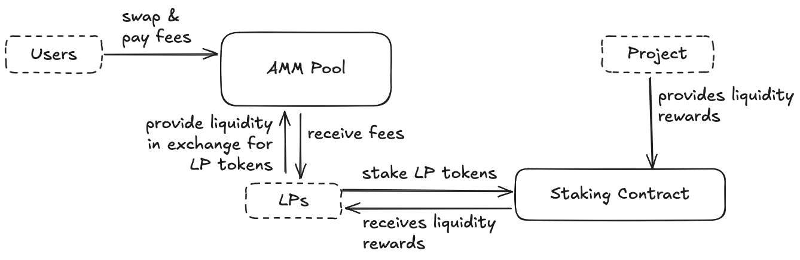
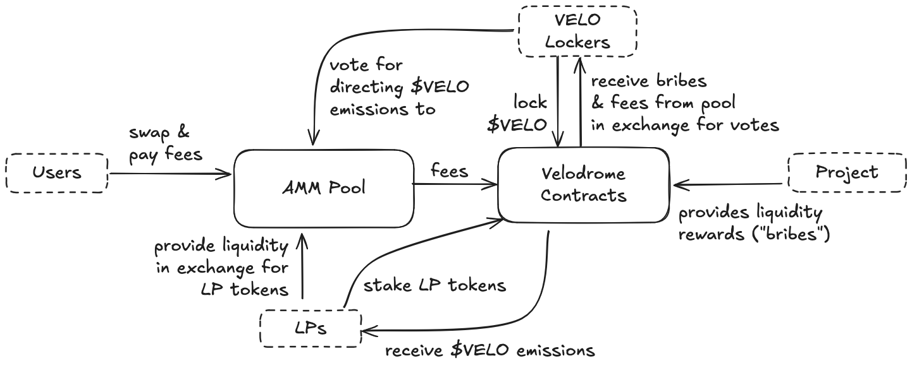

RSS Feed
RSS Feed
Lockonomics
or: How I Learn to Stop Worrying and Love the Dromes
I finally got tired of hearing people say that Velodrome/Aerodrome was a ponzi, and having to correct them. Time to set the record straight, while not hiding from the uncomfortable.
Table of Contents
-
- Velodrome is a Ponzi scheme
- Velodrome is printing money out of thin air
- VELO will inflate to nothing
- Uniswap is better than Velodrome
- How does ve(3,3) relate to OlympusDAO's (3,3)
- What about the rebase?
- 4 years is forever, so there is no way to cash out of Velodrome
- Are there other reasons to be bullish on Velodrome?
- What's the BATMAN token story?
Background
Disclaimer
I introduced the Velodrome team to Optimism while I was working there, back in the day. So me and them go way back.
None of this is investment or financial advice, which I am not qualified to give.
What's a drome?
Velodrome is the leading DEX on Optimism, and the first successful DEX of the ve(3,3) variety. Aerodrome is the leading DEX on Base, and features the highest-volume ETH-USDC and BTC-USDC pools in all of DeFi.
ve(3,3) was devised by Andre Cronje for a DEX called Solidly, launched on the Fantom blockchain. The Solidly launch didn't exactly go well. Despite rapidly accumulating 2B$ in TVL (this was peak DeFi hype and most of that was in now worthless farming coins on Fantom), there were numerous issues.
First, $SOLID was distributed was to top-TVL protocols on the Fantom blockchain. This lead to a race between Solidly over-layers to take control of the supply and then offer their own "liquid locking" system on top to direct voting power. If this seems confusing, see later for the explanation of how Velodrome works. If you're familiar with Curve Finance, think of these projects as the Convex layer this is not fully accurate, as Solidly does have "bribing" built-in). Unfortunately, the products were not ready for the Solidly launch and suffered numerous issues.
Second, in classical Cronje style, he yeeted the contracts day one with zero centralized control. While this is the ideal end state, it's good to take some precautions with novel systems. The contracts (as far as I know) suffered no bugs, but there was a funny occurrence where control would have come in handy (search “batman” in this doc for more info). This was crowned by Cronje ragequitting crypto (not for the first time — he's back again now) just one month after launching Solidly.
At that time, what would become the Velodrome team was involved with veDAO, one of the teams building on top of Solidly. They thought the idea was too good to waste, and went on to create Velodrome on Optimism (in part thanks to yours truly) and later Aerodrome, now the leading DEX on Base, and one the major leading DEX sporting the highest volume ETH-USDC and BTC-USDC pools in all of DeFi.
In what follows I will use “Velodrome” as stand in for “Velodrome & Aerodrome”, and all my comments about Velodrome apply equally to Aerodrome, unless otherwise specified.
ve(3,3)? MetaDex? Lockonomics?
I somehwat dislike the ve(3,3) moniker. The "ve” part refers to “vote escrow”, which is borrowed from Curve Finance, one of the major inspiration behind Solidly. That part is fine. The (3,3) part is a nod to OlympusDAO.
OlympusDAO... is difficult to describe. I wrote an analysis of it back in the day, because I didn't understand why seemingly smart people were doting on it.
The summary is it's nothing too good. In short, it's essentially a memecoin with sky-high inflation accruing to stakers which was going to invest token sale proceeds into various ventures. Some people call it a ponzi (which is incorrect, see later), but it definitely wasn't a smart investment and there was definitely a fair amount of “suspension of disbelief” involved, if not something worse.
I think the ve(3,3) model does suffer the association, and its contributions to the design are negligible (we'll go back to this later).
The Velodrome team itself has tried to rebrand the model as MetaDex, writing a series of article on the topic.
I think this series of article make a lot of good points, but I don't think they cut right to the core of why the model works, and why people's claims about it are incorrect. It's however an excellent read, and in particular most of what we'll touch on is explained with a different emphasis in Part 4 on Sustainability.
This is my attempt to clarify things, and in the process I'm coining “Lockonomics” for the model followed by Velodrome — which could potentially be extended to other places!
What's being argued
I'll be arguing that lockonomics is a good model, or at the very least an interesting model with interesting trade-offs that is not inferior to more traditional tokens model.
We'll explore this by contrasting how Velodrome compared to how most classical AMM DEXes work, and we'll use Uniswap as a stand-in.
Some people think that AMM DEXes are all bad (because of impermanent loss (IL) or loss-versus-rebalancing (LVR)). This is immaterial to the current discussion, which focuses on which token model works better if we assume that you are running a "classical" AMM DEX as a given.
As we'll see, lockonomics could easily generalize to any other revenue-generating DeFi protocol.
Lockonomics explained
Basic Plumbing
Basic DEX (~ Uniswap)
To understand how Velodrome works, we first need to understand how Uniswap works.
In this model, we consider an AMM pool. Let's imagine that this belongs to a project with a token $P, and that this is an $USDC-$P pool. Let's further assume that the project wants to incentivize the pool's liquidity.

The model features the following actors:
- Users who swap $USDC for $P & vice-versa, paying fees as they do so.
- Liquidity Providers (LPs) who provide $USDC and $P liquidity in exchange for LP tokens (which they can redeem at any time for their share of $UDSC and $P in the pool). LPs receive the fees paid by the users.
- The project, who incentivizes the pool liquidity by supplying $P rewards to a staking contract. LPs can stake their
LP tokens and receive a share of the liquidity rewards in exchange.
- This staking contract is not provided by the DEX, and must be setup by the project team separately. It is not advertised from the DEX's website.
If you've been around DeFI, this is all pretty straightforward.
Note that we do not mention a DEX token. If we're talking about Uniswap, this is fair: the token does not play an economic role (*), and is only involved in governance. More enlightened protocols will typically direct a cut of the fees to DEX token holders.
(*) Though do note it is used to fund some of the protocol's operation's, though this is not strictly required — Uniswap makes enough money on frontend fees.
Velodrome
Now here's how Velodrome works:

The Velodrome model features a new actor: the $VELO locker. They lock $VELO long-term, and in exchange receive voting power that they can direct to AMM pools of their choosing. This occurs every voting cycle, which is one week for Velodrome.
In exchange, they receive the fees paid to the pool, as well as any liquidity rewards setup by the project (now called “bribes” since they incentivize voting).
Instead of fees and liquidity rewards, LPs receive a share of $VELO emissions. These emissions are inflationary to the $VELO supply.
(Note that Velodrome allow LPs to receive fees instead of $VELO emission, albeit with a haircut. I don't believe that this feature is very important in how lockonomics work, so I'm omitting it in this analysis.)
Finally, an important point: how much $VELO is emitted? This was initially following a decreasing inflation schedule to distribute the token and incentivize growth before stabilizing, and is now controlled by the protocol — the rate is currently set by the team and will become governed by lockers in the future.
The emitted $VELO is directed to pools pro-rata to lockers’ votes.
An apple-to-apple comparison
Because of the role of the $VELO token, the system is very dynamic. Let's work our way up to the full complexity by constructing an artificial scenario where Velodrome would work as basically “Uniswap with extra steps”. In this scenario:
- LPs receive $VELO tokens worth exactly the fees paid by user + the bribes paid the project
- $VELO lockers receives fees & bribes that exactly offset the inflation caused by emissions (if we posit that the $VELO market cap is constant). We'll refer to this as “emissions = revenue”.
Is there any point in this basic scenario? Actually there is, and it's due to the facts that:
- Only a portion of the total $VELO supplied is locked.
- We can always fall back to this scenario via emission control.
The key insights behind lockonomics
1. Velodrome imposes a speculation tax on short-term holders
In our basic scenario, the $VELO lockers are actually making profit. Where does that profit come from if everyone else (users, LPs and project) are not worse off? It comes from non-lockers.
Every time $VELO is emitted, the $VELO supply is being diluted.
Let's pick some bullshit numbers & make some assumptions to illustrate (real numbers are much much smaller or bigger, this is only to illustrate the dynamics):
- Let's say that 10% of the current $VELO supplied is being emitted.
- We'll assume 1,000,000 $VELO tokens pre-emission, with a value of 1$ each.
- We'll assume the $VELO market cap remains constant.
- We'll assume that 50% of the $VELO supply is locked. (This is actually the case.)
- The value of $VELO drops to 1$*100/110 = 0.909$ after the emissions.
- The value of the emissions is thus 100,000*0.909$ = 90,900$
- Lockers collectively receive fees & bribes offsetting the emission, i.e. 90,900$.
- Given that lockers only owned 50% of the $VELO supply, the collective value of their $VELO dropped by 90,900$/2 = 45,450$. But they made 90,900$ on the fees & bribes, for a profit of 45,450$.
So in our baseline scenario, lockers make profit at the expense of short-term holders.
2. Locking is beneficial to trading flows
... and therefore to price action.
It's not a secret to anyone that has looked at the field for more than 2 seconds that most crypto tokens do not trade on fundamentals.
We could separate the value of any token into a “meme” (flow-driven) value and a “fundamentals” (revenue-driven) value.
(The reality is slightly messy, as revenue can be funnelled into flows, this is for instance the case for stock buybacks or Ethereum-style token burning.)
By trading flows, we simply mean the balance between supply and demand for a token.
An example of flow dynamics at play are “low float high market cap” tokens, where only a tiny portion of the token supply is available for sale at launch, artificially driving the price (and thus the market cap) up.
Long-term locking in Velodrome encourages the same dynamics. You need to lock your tokens for 4 years for maximal voting power, and the voting power decreases as the time on the lock decreases, leading most people to “perma-lock” their token (i.e. the tokens are always locked for 4 years until the locker disables the feature). This is evidenced by the average locking duration on Velodrome currently being 3.6 years.
Locked $VELO is effectively removed from circulation, which tends to be beneficial to the token price.
3. There is a floor underneath the house
The value of the $VELO token is not just memetic: it is supported by real revenue (from fees & bribes). This means that the value of the token cannot drop arbitrarily low, as at some point the APY for lockers would be too tempting to pass up. The principal for lockers is $VELO tokens, but the interest is in other tokens, so as $VELO underperforms, the APY mechanically shoots up, encourage investors to scoop up & lock $VELO.
(Of course, black swan events are always possible, like if the team were to suddenly abandon the project. There is always risk.)
It is important to note too that in the absence of revenue growth, it is natural for the inflationary $VELO token price to go down over time. This is normal, and as we have established, lockers are compensated for this (via fees, bribes, and the dilution of short-term holders) and come out ahead.
But what if $VELO (and thus LPs’ revenue) drop, causing the LPs to leave and fees to dry up? I'm glad you asked!
4. Emission control makes the system resilient to exogenous shocks
You may wonder if our baseline artificial scenario is realistic. I think it is, because of the ability of the protocol to set the emission rate.
If an exogenous (~external, not related to issues with the protocol itself) event would cause the token price to drop, this might potentially be threatening to the protocol, as the reduction in LPs's revenue could cause them to pull out.
This can, in extreme cases, be fought with emission control. Recall that lockers do not care how high inflation is, as long as they are compensated for it in fees and bribes. The protocol can simply increase emissions to the level where they are commensurate with fees & bribes, which will keep it competitive with classical DEXes.
This means that our baseline scenario should represent a worst case that the protocol that can always fall back to.
Conclusion — For Lockers: Heads I win, Tails I win
The key insight behind lockonomics is that it's an engine that incentivizes long-term holding.
Short-term holders get penalized by inflation. The lower the percentage of the supply is locked, the more lockers make profit in this manner. There is however the risk that the token price would go down as there a large supply available to be sold. But there is a baseline value for the token due to the protocol's revenue.
If, on the other hand, the percentage of the locked supply were to go up, then lockers would make less profit — but this would be positive for the token's price action.
In the worst case, emission control can be used to bring the system back to the emissions = revenue state, stabilizing the protocol.
Velodrome in practice
Emissions > Revenue
We've so far examined a baseline scenario where emissions precisely match revenue. In practice, emissions on Velodrome typically exceed revenue, often by as much as 100%.
Velodrome is often described as a Ponzi scheme or as printing money out of thin air — and I believe that this is the reason for those particular accusations.
The higher emissions are, in a certain sense, not ideal: it means that the lockers are getting overly diluted. If the goal is simply to stay competitive with Uniswap-like DEXes, then lower emissions would be sufficient. And the protocol could lower emissions today!
But it's also undeniable that the higher emissions have served to grow the protocol. Higher emissions attract LPs with high APY, increasing liquidity. They also attract projects, who can get more than 1$ of liquidity incentives to LPs for every 1$ spent in bribes.
Lockers haven't really suffered from the extra inflation in practice, as revenue has consistently exceeded the observed price impact from inflation (the token has had its price swings, but they cannot be easily attributed to routine inflation). Lockers are by design aligned with the protocol long-term, so growth is desirable as it represents a bigger future pie.
Over recent voting periods, $VELO inflation has been 15% annualized, which is consistently lower than the yields available to lockers (which have rarely dipped under 20% and have often been much higher).
It's important to understand that emissions > revenue is not sustainable. But everything we laid out before explains that (1) when emissions = revenue, the protocol is sustainable and equivalent to a Uniswap-style DEX, (2) emission control can be used to forcibly bring the protocol to this point.
Basically, by controlling emissions, a lockonomics DEX can choose between sustainable profits or incentivizing growth via incentives. If we hold market cap constant, the latter comes at the expense of lockers in the short-term — though in practice lockers have remained profitable with respect to token inflation.
Part 4 of the MetaDEX series makes the point that "emissions can always exceed fees", which I don't agree with. However, it does clarify the conditions for this to hold, in particular noting the following condition:
The fundamental value of each token depends on the degree to which fee growth outstrips supply growth.
This is exactly our point: as long as emitting more tokens today brings in more fees tomorrow, emissions > revenue is a winning strategy. This probably isn't the case forever, but it has been the case so far, and with the economy coming onchain, this could last a long time. And if or when it stops, you can always revert to emissions = revenue.
Growth & Moats
Growth is only good if it is sticky, and worthless if liquidity were to evaporate when emissions revert to revenues. I argue that a good portion of growth is indeed sticky.
Migrating liquidity to a different DEX is very disruptive for projects. They have to coordinate LPs to switch, direct users to a new DEX, and fragment (thus lower) liquidity while the migration is ongoing. In practice, DEXes are quite sticky for project.
Project are encouraged to accumulate $VELO. They will do so naturally if they have protocol-owned liquidity (POL), as they will receive emissions. On a long-term horizon, it is also more advantageous to accumulate locked $VELO because of its yield-bearing nature (if only because of the speculation tax).
When emissions > revenue, the situation is particularly favorable to protocols with POL, as they offset the extra inflation by being a recepient of the emissions themselves, letting them accumulate $VELO faster.
On Aerodrome, the “flight school” program also incentivizes projects to lock $AERO.
Users want the best execution, which mostly means the least price impact. This means they will use the pool with the most liquidity (or the most efficient liquidity, which is notably a factor with concentrated liquidity pools). Liquidity thus translates into fee revenue, and as a pool accumulates liquidity, it requires more and more external incentives to attract LPs and displace the pool.
It's of course possible for a new DEX to come onto the scene with a shiny new token to farm, but we can observe that well-managed DEXes have a lindy quality. Uniswap is a prime example, as despite the lack of protocol-specific incentive compared to the competition, they have remained a force to contend with.
Based on these observations, I think that one can indeed consider that growing the protocol is a worthwhile investment and not an unsustainable short-term “propping-up” of liquidity & token price.
Lockonomics beyond AMMs
The lockonomics model does not need to only apply to AMMs. In fact, it can work with any project that has real revenue (this could be lending, perps, launchpads, options, ...). Here's the playbook:
Direct the revenue to the lockers.
Compensate the users that would normally receive the revenue via project token emissions instead.
(Optional) Let lockers direct the inflation (i.e. in a lending protocol, to lenders in specific lending pools).
- This is optional because you could simply direct emissions to be proportional to the revenue generated. However, there are advantages on letting the lockers vote: it incentivizes projects to accumulate locked token to incentivize "things" related to them (e.g. lending pools). This does not however apply to every revenue-generating project.
Let lockers vote on emissions, deciding between a growth-orientation (more incentive to the users that would normally receive revenue) and a stable profitable equilibrium (revenue = emissions).
Profit.
I'm surprised this model hasn't been tried more widely before (or maybe it has and I'm simply not aware).
Common Objections & Questions
Velodrome is a Ponzi scheme
A ponzi scheme is when money from new investors is used to pay older investors in a way that is unsustainable. When new money stops coming in, the system collapses.
The term is often extended to systems that are not strictly Ponzi schemes in this sense, like memecoins: when new buyers stop coming in, everyone rushes for the exit.
But Velodrome does not need new buyers: in the worst case, the inflation causes the token price to go down over time, for which lockers are compensated.
As long as revenue (fees & bribes) doesn't drop precipitously, a drop in price provides a buying incentive, as the locking APY goes up.
The ability of the protocol to control emissions ensures that the system can always be brought to a baseline where emissions are commensurate to fees & bribes, which is a stable equilibrium.
Velodrome is printing money out of thin air
This criticism comes from the fact that, so far, Velodrome emissions have been systematically higher than protocol revenue (fees + bribes), often as high as 2x.
I elaborate on this in the “Emissions > Revenue” section, where I make two important points:
- The protocol does not not depend on emissions > revenue for sustainability, and can always stabilize to become Uniswap equivalent (emissions = revenue).
- The higher emissions incentivize growth, and a good portion of this growth is sticky (just like how Uniswap has been sticky).
VELO will inflate to nothing
In the absence of growth, yes the token price will go down over time. As we painstakingly established above, lockers are fully compensated for this and can even turn a profit. For non-lockers, this is indeed bad news, but that's the whole idea of lockonomics: incentivize & enforce long-term holding via a speculation tax on short-term holders, enacted via inflation.
Uniswap is better than Velodrome
Velodrome can be made functionally Uniswap-equivalent (emissions = revenue) via emission control. In that scenario, it remains much better than Uniswap for token holders. $UNI token holder accrue zero value from Uniswap, while $VELO holders are currently making a good return, even as emissions (and thus inflation) exceeds revenue. As we've seen, lockers remain profitable even when the system stabilize to emissions = revenue, via Velodrome's implicit speculation tax.
In the current growth era of Velodrome (emissions > revenue), it is also better for LPs (who make more revenue).
If we move beyond mechanism, the Velodrome team is better aligned with $VELO lockers than Uniswap ever was with its token $UNI holders. Despite dangling the carrot of a “fee switch” (that would direct a portion of fees to $UNI holder) for years, the Uniswap DAO has failed to pass the measure, as most of the delegated token supply is held by the team, VCs, and close affiliates. There are other issues with Uniswap DAO governance, but this isn't really the theme of this article and you should do your own research.
My suspicion is that Uniswap Labs (who makes 9 figures in frontend fees every year, none of which goes to token holders) resents having a token, which they only created as a reaction to the emergence of SushiSwap, and which is convenient to maintain the semblance of decentralization.
On the flip side, the entire $VELO supply was released from the get go, and the team is incentivized via locked $VELO.
Finally, note that 40% of the $UNI supply is not yet in circulation, and unlike Velodrome lockers, $UNI holders are not compensated for inflation.
How does ve(3,3) relate to OlympusDAO's (3,3)
(3,3) is a relatively stupid meme inspired by game theory that OlympusDAO stumble upon and ran with. It says in essence “if nobody sells we all get richer”. Of course you've got to sell to realize these profits, which is when the whole thing collapses.
From OlympusDAO, ve(3,3) takes two inspirations:
First, the rebase mechanism. This is mostly a meme in Olympus, but serves some purpose in ve(3,3), while being non-essential. See next section for an explanation.
The realization that you can operationalize a mature version of “if nobody sells we all get richer” via the trading flows that we talked about earlier. Two conditions need to be satisfied for this to work.
There needs to be real revenue underlying the protocol, otherwise you are pursuing an exercise in futility (even Olympus paid lip service to this with the prospect to invest in various projects).
You need to enforce the “don't sell” part, which is done via locks, and incentivize it correctly so that locking actually makes sense.
I still generally dislike the association to OlympuDAO. While there is a throughline between trading flows and a meme like “if nobody sells we all get richer” (the grotestque extreme extrapolation of the concept), nuance is not in high supply and the association is likely to lead to misunderstandings. I think the (temporary) overperformance of low-float high market cap tokens is a much better way to explain how trading flows positively impact a token's price.
What about the rebase?
One feature of the Velodrome we didn't talk about is the “rebase”, which is basically extra $VELO emissions that are distributed to lockers.
The rebase is in my opinion completely anecdotic, and is just a cute slider that can be used to further tax short-term holders. Emission control could be used to do the same, although since the token price cannot be directly controlled, this could have the not-so-dramatic effect of overpaying LPs compared to what would be optimal.
It's a useful tool, and probably worth keeping, but ultimately the system doesn't need it to be sound.
4 years is forever, so there is no way to cash out of Velodrome
Locked $VELO is placed into a veNFT that is freely tradeable. The NFTs trade at a discount to the $VELO market price. They are also being traded OTC on the Velodrome Discord server.
That being said, it is undeniable that locked your $VELO requires a long-term orientation that is not the norm within DeFi.
Are there other reasons to be bullish on Velodrome?
I am biased, but I think the team is top class, and the results speak for themselves. Despite their success, they continue to work hard and have high ambitions that run long-term.
There are reasons to be bullish in the short term too.
Regarding Velodrome specifically, it now supports liquidity and cross-chain swaps accross major chains in the Optimism Superchain. With the advent of Superchain interop, these cross-chain swaps will become even faster and cheaper.
Aerodrome on the other hand benefits from the success of Base as one of the two major L2 chains and on the Coinbase's effort to foster its success. All tokens listed on Aerodrome are now listed in the Coinbase app.
And because Base lacks a token of its own, $AERO often serves as a way for people to bet on Base's future success.
What's the BATMAN token story?
When Solidly launched, it also naturally had emissions > revenue. Someone realized that, under these conditions, the best return on $SOLID was achieved in a way that didn't grow the protocol.
What our trickster did was create two ERC-20 tokens whose supply was fully owned by them. One of these tokens was called BATMAN, and the other one ... in my memory it was SPIDERMAN, but I did some research and found one article mentioning SUPERMAN and one mentioning ROBIN. So I don't know! Crazy that these events are seemingly lost to easily retrievable history.
Then, our trickster used his existing $SOLID to direction emissions to his own BATMAN-SPIDERMAN pool, receiving more emissions in this way than the fees + bribes he would have received otherwise.
This wasn't a terrible death knell to the protocol, but it is rather sub-optimal that, while “honest” lockers were being diluted under emissions > revenue, a part of these emissions did not grow the protocol in any useful way.
And this also explains why, so far, pool deployment on Velodrome have been permissioned.
Note that Aerodrome will soon feature a permissionless pool launcher that allows permissionlessly launching pools in the basic "Uniswap-like" model, which can then graduate to the full lockonomics model (where approval is still permissioned).
Dune Dashboards
I really recommend digging into the following Dune dashboard if you want some data into Velodrome & Aerodrome: